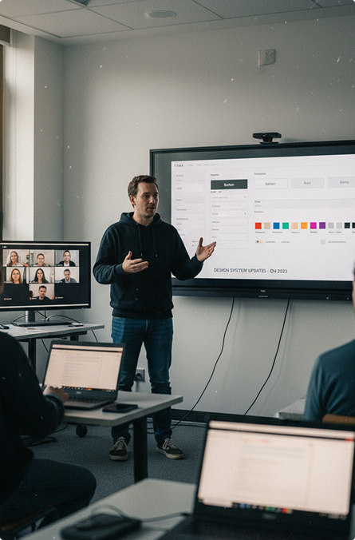
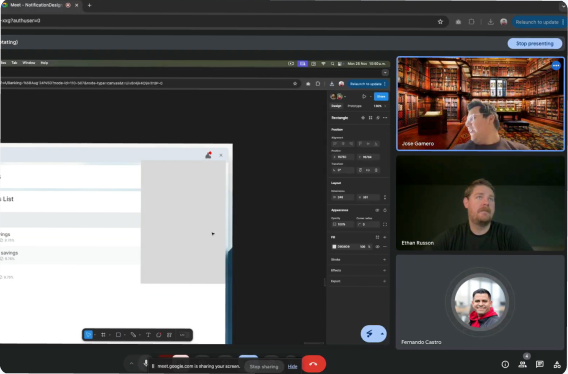
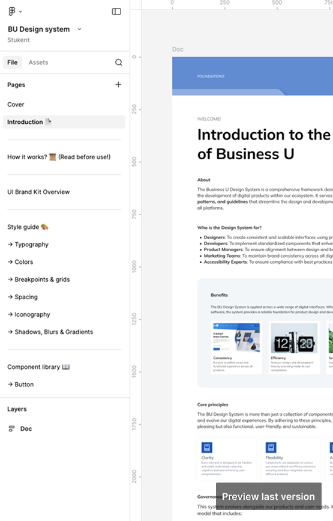

A four-month project to turn a fragmented e-learning platform into one scalable design system: shared tokens, a documented library of 35 components, and a governance model the whole team adopted.
Audit to launch
Documented components
Product themes × display modes
Found it significantly easier to work with
Teams designed independently without a shared system, leading to inconsistent experiences across products.
Five planned stages: foundations, style guide, component library, testing, and launch & training.
A cohesive, scalable system that improved consistency, collaboration, and speed across a growing team.
- System & workflow: duplicated components, detached instances, disconnected files, unclear handoff.
- Teams & product: slower cycles, more errors, limited scalability, product–marketing friction.
- Organization: alignment after the Stukent acquisition, with multiple teams, tools, and workflows to unify.
Foundations
GoalBuild a shared language and the structural backbone everything else would depend on.
- Audited every active Figma file to find recurring components, inconsistencies, and organic patterns.
- Benchmarked Material Design, Polaris, and Carbon on documentation, tokens, and architecture.
- Planned a four-month roadmap that aligned stakeholders and positioned the system as a strategic initiative.
- Structured the Figma file and a documentation template every component follows.
Style guide
GoalStandardize brand, color, type, grids, and effects as functional decisions, not just visual ones.
Light · Dark
- Rebuilt brand assets from Adobe XD: logo variations, Material icons, and usage rules with marketing.
- Layered tokens (primitive → semantic) to power two products and two modes from one foundation.
- Chose Mulish for its high x-height and rounded forms that reduce load in long reading sessions.
- Catalogued effects (elevations, blurs) and tested each one against accessibility standards.
Component library
GoalDecide what to build, in what order, and why, so the library rests on evidence rather than assumption.
- Inventoried components across Figma and Adobe XD, and reviewed Fluent, MUI, and Fiori.
- Ran a gap analysis: nothing was built without a documented gap, redundancy, or product need.
- Delivered in three rounds, atoms first, each with Figma testing, accessibility validation, and annotations.
- Made accessibility a requirement with an external expert: WCAG 2.1 AA, keyboard, contrast per theme and mode.
Testing
GoalValidate the system under real conditions, across teams, roles, and contexts, before it reached production.
Rated the library significantly easier to work with than the previous fragmented workflow, across all workshop rounds.
- Workshops with 15 designers, remote and in person, per round, in QA environments close to production.
- Scenario-based tasks on consistency, usability, and brand, logged live and synthesized in debriefs.
- Dev testing on feasibility, token usage, and responsiveness, with KPIs for consistency, efficiency, and adoption.
- WCAG 2.1 AA diagnostics by an external expert, logged per component and prioritized by severity.
Having a single source of truth for components cut my design time in half on the last sprint.
Andrea M. · Senior Product Designer
For the first time I didn't have to ask the designer what color to use for a disabled state. It was just there.
Carlos R. · Frontend Developer
Launch & training
GoalShip a system that is structured, governed, and actually adopted from day one.
- Validation with devs, the accessibility consultant, and designers; every critical issue had an owner.
- Documentation reviewed and kept as the single source of truth inside Figma.
- Go-live set to a specific date and time, marking the move from build to use.
Measuring what changed
GoalSuccess was defined before launch: design efficiency, adoption confidence, and system health.
Sprint efficiency
Less design and dev time on tasks with existing components; less rework and decision overhead.
SUS adoption score
Surveys at months one and two.
Figma usage
Insertions, detach rates, and viewer activity to spot where teams work around the system.
Prioritize researchA full audit prevents redundancy.
Atomic designNeeds strict sequencing to avoid rework.
NamingAlign token names with dev from day one.
GovernanceA living system needs an owner.
Scope creepFlexibility in the process isn't optional.
DocumentationIs a product in itself.
CoordinationA team of 15 compressed some feedback windows.
AccessibilityRemediation delayed two components.


